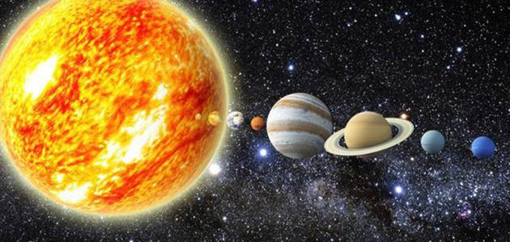

المقدمة:
النظام الشمسي هو مجموعة من الأجرام السماوية التي تدور حول الشمس، ويشمل الكواكب، الأقمار، الكويكبات، المذنبات، والنيازك. يقدر عمر النظام الشمسي بحوالي 4.6 مليار سنة، وقد تشكل نتيجة انهيار سحابة ضخمة من الغاز والغبار تُعرف بالسديم الشمسي.

الشمس:
تعتبر الشمس أكبر جرم في النظام الشمسي، حيث تشكل حوالي 99.8% من كتلة النظام. تُعد مصدر الضوء والحرارة الضرورية للحياة على كوكب الأرض. يُعتقد أن عمر الشمس حوالي 4.6 مليار سنة، ومن المتوقع أن تستمر في الوجود لمدة خمسة مليارات سنة أخرى قبل أن تتحول إلى عملاق أحمر ثم إلى قزم أبيض.